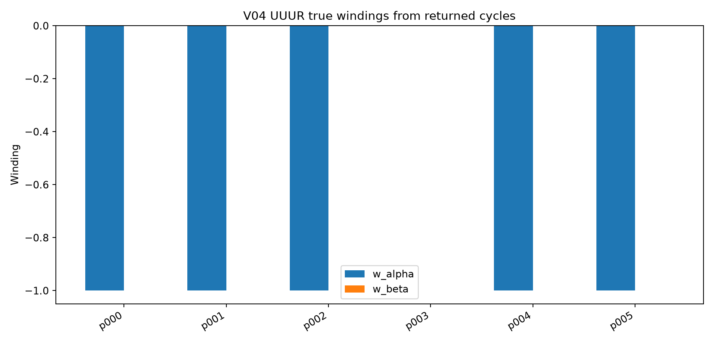
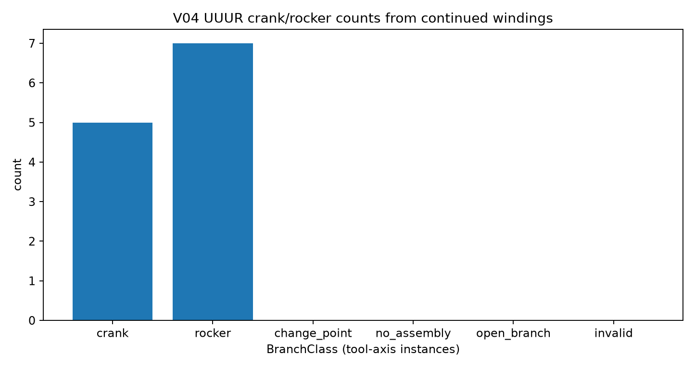
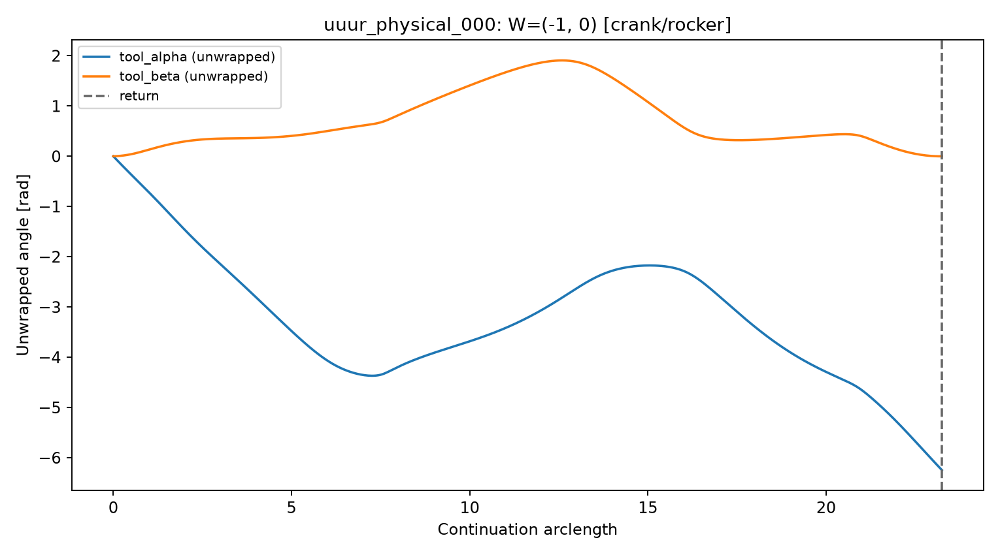
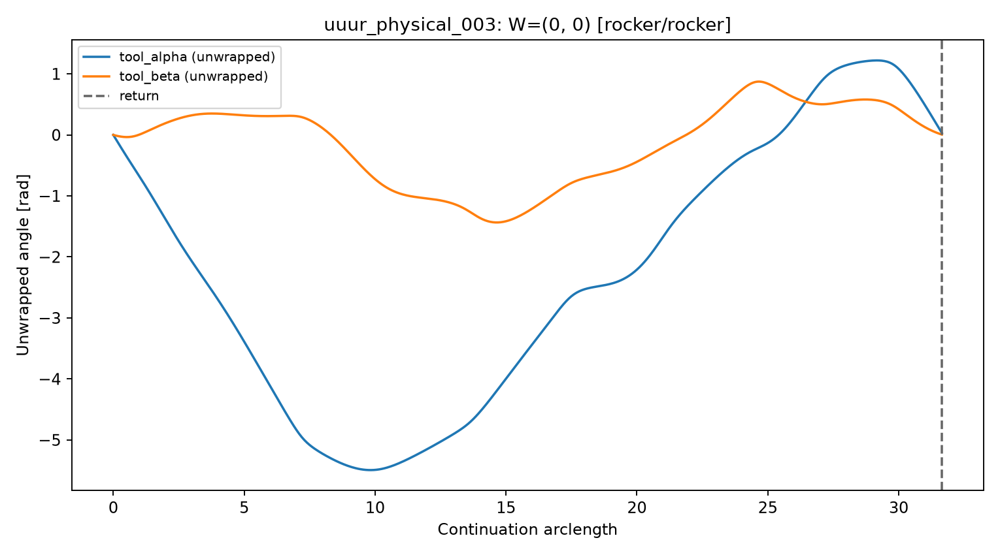

STATUS: windings below are computed from continued one-DOF closure cycles. They are not V02 mock heuristics and are not conventional planar Grashof labels.
Each UUUR physical sample is solved once with the V03 seven-coordinate kernel.
tool_alpha and tool_beta windings are read from that single returned cycle.


| Sample | Cycle status | Direction | Points | w_alpha | w_beta | class_alpha | class_beta | Returned |
|---|---|---|---|---|---|---|---|---|
| uuur_physical_000 | returned | 1 | 466 | -1 | 0 | crank | rocker | yes |
| uuur_physical_001 | returned | 1 | 235 | -1 | 0 | crank | rocker | yes |
| uuur_physical_002 | returned | 1 | 472 | -1 | 0 | crank | rocker | yes |
| uuur_physical_003 | returned | 1 | 634 | 0 | 0 | rocker | rocker | yes |
| uuur_physical_004 | returned | 1 | 200 | -1 | 0 | crank | rocker | yes |
| uuur_physical_005 | returned | 1 | 996 | -1 | 0 | crank | rocker | yes |
Winding-result JSON · Cycle-trace JSON
W=(-1, 0); classes=(crank, rocker); returned=True; direction=1; points=466.

W=(0, 0); classes=(rocker, rocker); returned=True; direction=1; points=634.

crank means |w_i| ≥ 1 on a returned cycle for that tool coordinate.rocker means the cycle returned and w_i = 0.